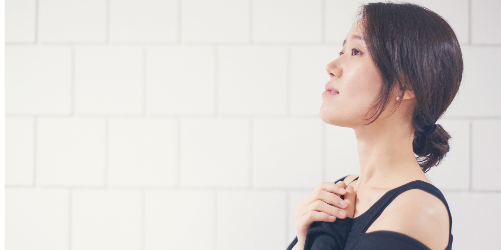

Different problems. The same pattern. In love, career, and life — they all trace back to one thing. Once you see it, everything shifts.
Discover More这些年做咨询，我见过很多努力的人。他们在感情里反复受伤，在事业里不断碰壁，走到人生的某个阶段，突然觉得——我是不是哪里出了问题？
可是问题从来不是你不够好。
问题是——你有没有看懂自己的规律？你的思维模式、你的情感需求、你的人生节奏……这些都刻在你出生那一刻的密码里。当你不了解自己，就算机会来了，也抓不住。就算贵人来了，也认不出来。就算好运来了，也留不住。
以下的每一个洞察，来自我这些年咨询里反复看见的真相。它们关于爱情，关于事业，关于人生的下半场。每一个，都可能说的是你。
Over the years, I've met so many hardworking people. They kept getting hurt in relationships. They kept hitting walls in their careers. And at some point, they'd ask — is something wrong with me?
Nothing is wrong with you.
The question is — have you ever understood your own patterns? Your thinking style. Your emotional needs. Your life rhythm. These are written into the blueprint of who you are. When you don't know yourself, opportunities slip past. The right people don't stay. Good fortune can't find you.
Each of the following insights comes from what I've seen repeated, again and again, across hundreds of consultations. About love. About career. About the second half of life. Every one might feel like it was written for you.
「很多感情/婚姻失败，不是因为不爱。
而是一开始，就不适合。」
我们太容易被感觉吸引了。聊得来，有火花，很浪漫——就以为遇到对的人。可是婚姻不是谈恋爱。婚姻是两个不同成长背景、不同价值观、不同思维模式的人，一起走几十年。
有些人天生重感情，有些人天生重事业。有些人需要陪伴，有些人需要空间。如果两个人的核心需求完全不同，就算再相爱，未来也会出现很多矛盾。
结婚之前，很多人花了几百个小时筹备婚礼，却没有花几个小时讨论婚姻。婚礼只有一天，婚姻却可能长达几十年。真正让婚姻出现问题的，往往不是大事，而是生活里价值观的长期碰撞。
所以，爱一个人之前，先看懂自己。再看懂对方。因为爱情让你心动，适合，才能让你走得长久。
你知道自己真正需要什么样的伴侣吗？
了解你的关系蓝图 →"Many marriages/relationship fail — not from a lack of love,
but because they were never truly compatible."
We're too easily drawn to feelings. Good conversations. Sparks. Romance. And we mistake that for finding the right person. But marriage/relationship isn't dating — it's two people with different backgrounds, different values, different ways of thinking, choosing to walk together for decades.
Some people are naturally emotional. Others are career-driven. Some need closeness. Others need space. When two people's core needs are fundamentally different, love alone won't be enough.
Before the wedding, most couples spend hundreds of hours planning the event. Almost none planning the marriage. A wedding lasts a day. A marriage can last a lifetime. What breaks most marriages isn't one big event — it's years of unresolved collisions in values.
So before loving someone, understand yourself first. Then understand them. Love creates the spark. Compatibility determines the distance you travel together.
Do you truly know what kind of partner you actually need?
Discover Your Relationship Blueprint →「很多人不是能力不够。
而是方向错了——或者，时机不对。」
你有没有发现，越努力，有时候反而越焦虑。不是因为你不行，而是你一直在跑，却不知道自己要去哪里。
人生跟种树一样。春天适合播种，夏天适合成长，秋天适合收获，冬天适合沉淀。如果你在冬天逼自己开花，你只会觉得自己很失败。但问题不是你不够好，而是你不了解自己现在的人生阶段。
同样30岁，有些人开始起飞，有些人却越来越迷茫。差距来自于有没有看懂自己的人生节奏。有些人正在收获期，过去十年的努力开始开花结果。有些人正在转型期，人生在逼他离开旧赛道，重新开始。
卡住，不一定是坏事。有时候，人生是在逼你换方向，而不是继续往前冲。选对赛道，比拼命努力更重要。
你现在走的路，是属于你的路吗？
看清你的人生节奏 →"Most people don't lack ability.
They have the wrong direction — or the wrong timing."
Have you noticed — the harder you push sometimes, the more anxious you feel? It's not that you're not capable. It's that you keep running, but you don't know where you're actually going.
Life moves like seasons. Spring is for planting. Summer is for growing. Autumn is for harvesting. Winter is for stillness. If you force yourself to bloom in winter, you'll feel like a failure. But the problem isn't you — it's that you don't understand which season you're in.
Two people, same age. One is thriving. One feels completely lost. The gap isn't talent — it's whether they understand the rhythm their life is actually in. Some are in a harvest season, their decade of effort finally bearing fruit. Others are in transition — life is forcing them off the old track to begin again.
Being stuck isn't always failure. Sometimes life is redirecting you, not punishing you. Choosing the right lane matters more than running harder in the wrong one.
Is the path you're on actually yours?
Find Your True Direction →「人生走到下半场——
你有没有开始，为自己而活？」
这些年我接触很多人，大家最常说的一句话是：没有人真正懂我。不是没人懂，是我们习惯扮演坚强，习惯当别人的依靠，却忘了表达自己的需要。
很多父母以为，等孩子长大以后，人生就轻松了。可是很多人的迷茫，恰恰是从孩子长大以后才开始。过去二十多年，你忙着赚钱，忙着养家，忙着照顾孩子。有一天孩子毕业了，你突然发现——自己不知道下一步该做什么。
孩子毕业了，你的人生不应该毕业。
还有很多人到了50岁以后，开始告诉自己：我老了，不适合谈恋爱了，不适合开始新的事业了。可是我想问——是谁规定50岁以后不能重新开始？人生从来不会因为年龄结束。它只会因为你停止相信而停止。真正吸引爱情的，从来不是年龄，而是生命力。
人生的下半场，你打算为谁而活？
为自己的人生下半场做准备 →"In the second half of life —
have you started living for yourself?"
The most common thing I hear from people after 40: "Nobody truly understands me." It's not that nobody does. It's that we've spent so long being strong for others — the pillar, the provider — that we forgot how to express our own needs.
Many parents believe life gets easier once the children grow up. But for so many, the real confusion begins exactly then. For 20+ years, you poured yourself into your family. Then one day the children leave — and you realise you don't know what to do with yourself anymore.
Your children graduated. Your life shouldn't.
And there are those past 50 who quietly tell themselves: I'm too old now. For love. For new beginnings. For starting over. But who wrote that rule? Life doesn't end with age. It ends when you stop believing it's worth living. What truly attracts love was never about age — it's about vitality.
In the second half of your life — who are you living for?
Begin Your Next Chapter →
这些年，很多人来找我，第一句话都是：Joyce，我什么时候会发财？我什么时候会结婚？我什么时候会转运？
以前的我，很喜欢回答这些问题。可是这些年以后，我越来越少这样做了。因为我发现——未来很重要，但没有大家想象中那么重要。
真正重要的是，你知不知道自己是谁。因为当一个人不了解自己，就算机会来了，也抓不住。就算贵人来了，也认不出来。就算好运来了，也留不住。
「真正困住你的，从来不是命运。
而是，还没看清自己。」
Over the years, so many people come to me with the same first question: Joyce, when will my luck change? When will I find love? When will I finally succeed?
I used to love answering those questions. But over time I've done it less and less. Because I've realised — the future matters, but not as much as everyone thinks.
What truly matters is whether you know who you are. Because when you don't understand yourself, opportunities slip past unrecognised. The right people can't reach you. Good fortune can't stay.
"What's been holding you back was never fate.
It was never truly seeing yourself."
「一开始我对算命持有疑虑——我从未认真看待这些。但 Joyce 精准地指出了我从未看见的规律，让我深刻地重新认识自己。现在我对生活和工作方向有了前所未有的清晰感。」
Shawn Lim · 新山"I came in sceptical — metaphysics wasn't something I took seriously. But Joyce named patterns in me with a precision that made me stop and reflect. The clarity I walked away with, around work and direction, was genuinely unexpected."
Shawn Lim · Johor Bahru「我来的时候感觉自己一直在兜圈——同样的问题在生活里不断重复，Joyce 的咨询之后，我终于明白了为什么。那份清晰，改变了一切。」
Sarah L. · 创业者 · 吉隆坡"I came in feeling like I was going in circles — the same issues, different years. After my session with Joyce, something clicked. I finally understood why. That clarity changed everything."
Sarah L. · Entrepreneur · Kuala Lumpur「Joyce 不只是告诉你发生了什么——她让你感觉终于可以不带评判地理解自己。坦白说，我很喜欢JOYCE的方式，她不是命理师，比较像引导我成长的引路人。」
Michelle T. · 市场总监 · 新加坡"Joyce doesn't just tell you what's happening — she helps you feel like you finally have permission to understand yourself without judgement. I left feeling lighter than I had in years."
Michelle T. · Marketing Director · Singapore如果这些洞察让你有所触动，这正是起点。了解 Joyce 的咨询服务，看清你的人生蓝图，做出更好的人生决定。
了解咨询服务 或通过 WhatsApp 直接联系 Joyce WhatsApp JoyceIf these insights resonated, this is just the beginning. Explore Joyce's consultation services and discover what your life blueprint reveals about love, career, and the path ahead.
Explore Services Or reach Joyce directly on WhatsApp WhatsApp Joyce